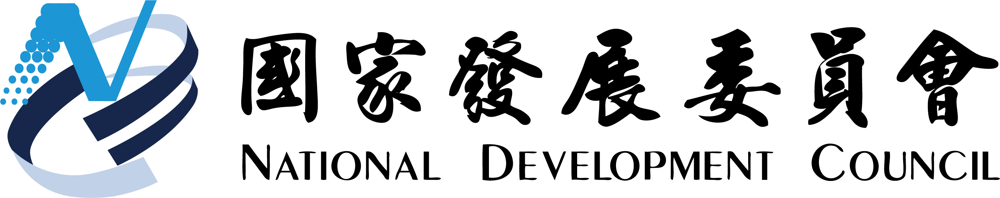
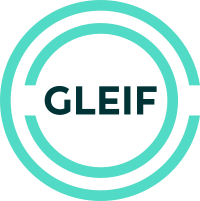
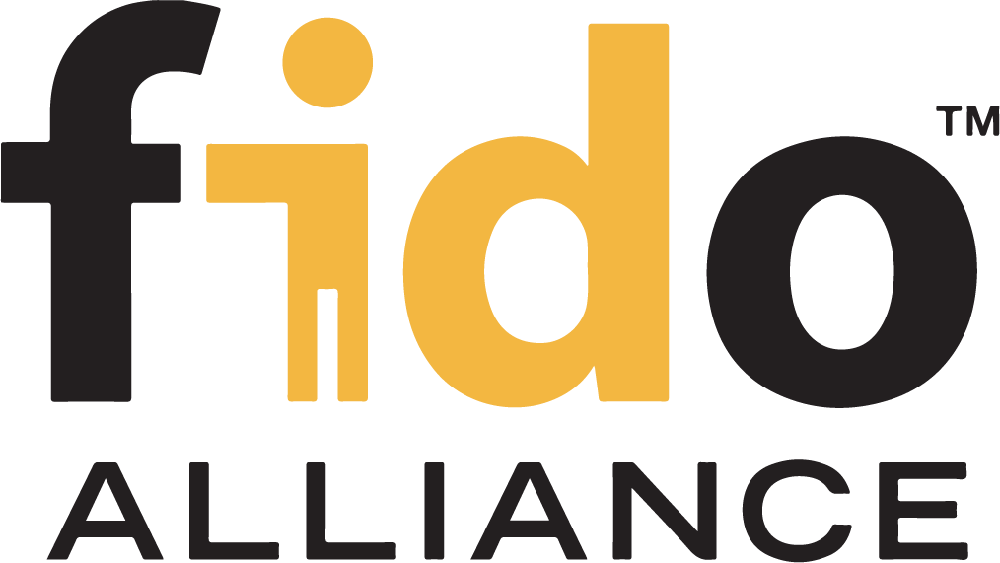
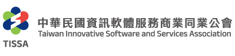
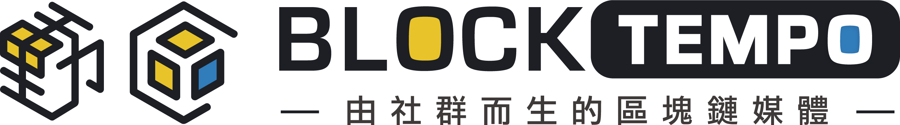
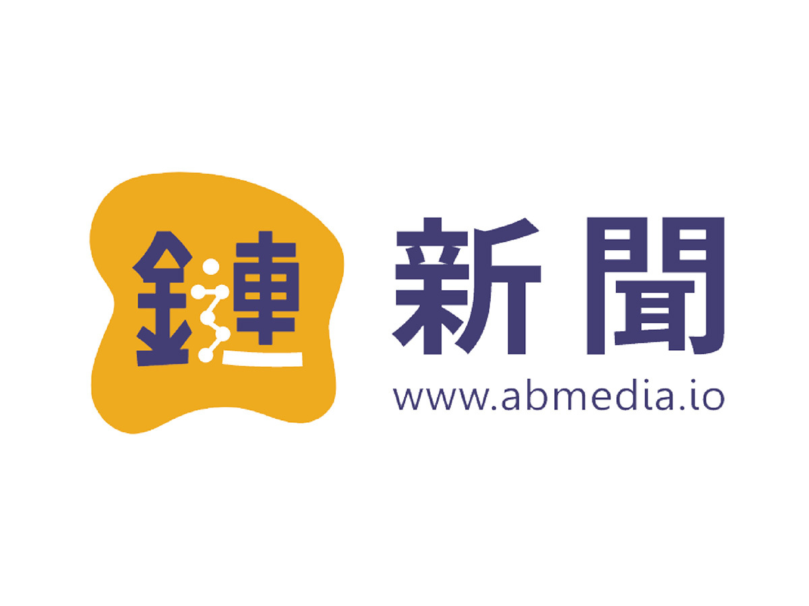

冠軍
USD 5,000
1 隊
01 / Why Now
AI Agent 的信任問題，不能只靠更好的回答來解決。
當 Agent 代表人查詢、下單、送件或簽署時，關鍵不只是答案正確，而是能否說清楚誰授權、做了什麼、何時失效，以及事後如何追溯。
02 / Prize
總獎金 USD 14,000+
將隨贊助加碼
特別獎隊數與分配方式以正式公告為準。
USD 5,000
1 隊
USD 2,000
2 隊・每隊
USD 1,000
3 隊・每隊
USD 2,000
活動單位

國家發展委員會
TABEI

GLEIF 全球法人識別碼基金會
KERI Foundation
Startup Island TAIWAN

FIDO Alliance

中華軟體公會（TISSA）

動區動趨 BlockTempo

鏈新聞 ABMedia
03 / Challenge Topics
六道產業命題預告已全數公開。完整命題內容於入選後工作坊公布。
Track 01｜供應鏈與貿易金融
碳足跡資料散落在內部系統與供應商之間；如何讓跨組織查驗成立，同時只揭露必要數據、不外洩製程機密？
Track 02｜電商與第三方支付
開戶 KYC 已經扎實，但盜用與人頭帳戶往往發生在開戶後；如何持續辨識異常，又不攤開完整交易明細？
Track 03｜醫療保險
醫院與保險公司的個資及法遵邏輯不同；如何只交換理賠所需的最小必要資訊，同時建立雙方願意合作的機制？
Track 04｜政府服務
當 Agent 代辦跨機關申請時，如何讓既有憑證安全流動，並清楚劃分「代查」、「代送件」與本人確認的授權邊界？
Track 05｜普惠金融
逾 87 萬移工面臨開戶障礙，也容易遭冒名利用；如何建立一套「能被信任、又不被冒用」的數位身分與憑證機制？
Track 01 延伸｜供應鏈與貿易金融
RBA 稽核仍高度依賴人工與紙本；如何讓供應鏈合規證明持續可驗證，同時不必揭露工廠的完整內部資料？
加分題：可與 01–05 其中一題同時挑戰，作為加分項目。
完整命題（背景、核心可信問題、方向提示）將於入選後工作坊公布，屆時亦說明命題選擇方式。命題 06 為 Track 01 延伸的加分題，可與其他命題同時挑戰。
04 / Why Join
免費參加。全力以赴。
向產業評審與與會者展示成果。
現場導師支援與開發指導。
作品與場景問題接軌後續合作討論。
完成交付與展示即獲完賽證明。
活動期間供餐，8/29 晚間場地延長開放至隔日上午，供隊伍持續開發。
尚未組隊者可在賽前工作坊認識 AI、資安、區塊鏈與產品等跨域夥伴。
05 / Roadmap
各項時間以主辦方最新公告為準。
06 / Event Info
兩日實作。第三天上台。
入選者完成組隊後，現場完成可信 AI Agent 原型與 Demo Day 展示。
以一頁 Governance Gap Memo 說明作品的信任設計。
把場景痛點、Agent 原型與後續合作可能性接起來。
報到、活動規則說明、隊伍與命題開發方向確認。
Build sprint、mentor office hours、收尾與正式交件。
成果簡報、評審、頒獎與完賽證明。
07 / Eligibility
入選者組隊與出席問題｜聯絡：hackathon2026@chain.tw
報名已截止；入選者將於工作坊完成 3–5 人組隊，並依正式規則參與活動。
08 / Finalists
入選者與隊伍將於 8/7 公告。
09 / Judging
候補機制以正式簡章為準。
作品不必做到產品級；重點是讓評審看懂 Agent 代表誰、被允許做什麼、高風險動作是否受控，以及行為是否可追溯、授權是否可撤銷。
代表誰？Agent 代表哪一個人、團隊、法人或公部門單位。
被授權做什麼？誰授權、允許做什麼、禁止做什麼。
能呼叫什麼工具？每個工具需要哪些權限與邊界。
高風險動作如何被擋？付款、送件、簽署或讀取敏感資料需明確把關。
如何追溯行動？記錄 Agent 的行動、決策與授權依據。
何時失效或撤銷？授權過期或撤銷後，Agent 必須停止執行。
這 6 個要點是協助說明可信設計的參考面向；治理／信任設計說明（Governance Gap Memo）為正式交件項目。
以一頁治理／信任設計說明（Governance Gap Memo），說明作品如何回應這些信任要點。
10 / Network
評審、導師與各合作單位資訊將依正式確認進度更新。
將邀請產業、學界與社群代表參與評審與指導；名單以正式公告為準。
11 / Pre-event Activities
從活動說明、組隊媒合，到題目收斂。
已於 7/20（一）舉行。當天說明活動內容並進行現場 Q&A；活動錄影不對外公開。
可信 AI Agent 與數位憑證工具導覽；全體報名隊伍皆可參加，不限入選者。
六題完整命題公布、產業痛點說明與 POC 題目收斂；入選者可在本場持續媒合並確認最終隊伍。09:40 報到，限入選隊伍參加。
12 / Venue & Access
N24 台北方舟。三天都在這。
13 / FAQ
單人報名、組隊媒合、出席與交件，一次說清楚。
完全免費。線下工作坊與活動期間提供餐食。
年滿 18 歲，對 AI、軟體開發、設計、產品、資安、數位身份或相關領域有興趣之學生、社會人士與業界人士。
有，本活動限年滿 18 歲（報名時全體成員均須年滿 18 歲）。
最終每隊 3–5 人，每位參賽者僅能加入一隊；入選者於工作坊確認最終隊伍。
報名已截止。報名期間個人、未滿員隊伍與完整 3–5 人隊伍皆可提交；入選者須在活動前完成 3–5 人隊伍。
組隊媒合將於兩場賽前工作坊進行，入選者可在現場認識隊友、討論分工並確認最終 3–5 人名單。
可以。最終每隊 3–5 人，每位參賽者限加入一隊；成員異動請於 8/22 前以 Email 通知主辦方（hackathon2026@chain.tw），以利確認最終名單、餐食與完賽證明。8/15 線上工作坊開放全體報名隊伍參加，不限入選者；8/22 線下工作坊限入選隊伍參加。
報名已結束。歷史報名期間為 7/8 開放至 8/5 23:59（GMT+8）；隊伍由 Team Leader（團隊代表）代表提交，每隊僅提交一次，個人報名者以本人為聯絡窗口。
團隊背景（建議整理為一份 PDF：成員與角色分工、所屬單位、相關經驗）、想解決的痛點、初步解法構想，以及 GitHub 或作品連結（選填）。個人報名者，團隊背景可改填個人背景與專長。報名所提痛點用於書審評估；入選後將依公布之命題進行開發。
正式題目由主辦方與產業夥伴共同命題，共六大真實場景（見主題區預告）；完整命題於入選後的工作坊公布，並說明命題選擇方式。報名時請提出你們自訂的痛點與解法構想，作為書面初審的評估依據。其中命題 06 為加分題，團隊可於主要命題之外同時挑戰。
技術自由，但作品須能展示可信 AI Agent 的身份、授權、行動邊界、稽核與撤銷思考，且僅能使用合法授權之模型、資料與工具。
代表誰（Principal）、被授權做什麼（Authorization）、可呼叫的工具與動作（Tool / Action）、政策關卡（Policy Gate）、稽核軌跡（Audit Log）、失效與撤銷（Expiry / Revocation）。
不強制。只要能清楚展示身份、授權、驗證、稽核與撤銷即可；區塊鏈／VC 是選項而非必需。GLEIF、FIDO Alliance 與 KERI Foundation 列為支持單位，不代表參賽隊伍必須採用 LEI、vLEI、FIDO 或 KERI 相關規範、技術或服務。
請自備筆電及開發所需個人裝置；現場提供網路、電力與活動期間餐食。
7/8 開放報名、7/20 線上說明會、8/5 23:59 截止（GMT+8）、8/7 公告入選、8/9 23:59 入選者直接回覆通知信確認、8/15 14:00–16:00 工作坊 #1（線上，開放全體報名隊伍）、8/22 09:40 報到、10:00–17:00 工作坊 #2（線下，限入選隊伍）、8/29（六）09:00 報到 Hackathon Day 1、8/30（日）Hackathon Day 2，23:59 交件截止、8/31（一）09:30–17:10 Demo Day。
是。Team Leader 須全程出席兩場賽前工作坊、Hackathon 與 Demo Day。線上說明會已於 7/20 舉行，活動錄影不對外公開。
除 Team Leader 須全程出席外，其他入選隊員不強制，但強烈建議參與。需要媒合的入選者請參與賽前工作坊，以便認識隊友並確認最終隊伍。
8/29 晚間場地延長開放至隔日上午，供隊伍於場地內持續開發；22:00 後不再受理進入，此前可自由進出。自由參加，可選擇當日往返。主辦方將統計夜間留場人數。
程式碼儲存庫（GitHub）、簡報、Demo 連結或影片、一頁治理／信任設計說明、README。
8/30（日）23:59 前完成交件，缺件、逾期或無法展示可能影響評分、完賽或獲獎資格。
每隊成果簡報 5 分鐘，評審 Q&A 2 分鐘，合計 7 分鐘。簡報統一於指定期限前繳交，Demo Day 當天由主辦方以協會電腦播放，不接受自備筆電接投影。上台順序由主辦方隨機排定，當日公布。Team Leader 須到場，簡報得由 TL 或其指定隊員擔任；最終名單之全體成員均須出席，得獎隊伍並以此為領獎條件。
初選（書面）：題目相關性 50%、可行性 30%、團隊能力 20%。
決選（Demo Day）：產業應用場景契合度 35%、可信技術導入 AI Agent 的可行性 25%、簡報與 Demo 呈現 25%、問題洞察與創意巧思 15%。
現金獎金池 USD 14,000+（將隨贊助加碼）：冠軍 1 隊 USD 5,000、亞軍 2 隊各 USD 2,000、季軍 3 隊各 USD 1,000、特別獎 USD 2,000。
有。得獎隊伍須完成必要交件、於 Demo Day 完成展示，且最終名單之全體成員出席 Demo Day，方可領獎；未能全體到場者，主辦得保留、調整或取消該隊獎項。
作品智財原則上歸該隊。主辦與合作單位得為活動紀錄、成果發表與非商業宣傳，使用隊伍名稱、作品名稱、公開簡介、簡報與展示內容、現場照片及影片。
僅用於本活動之報名、審查、聯絡、活動營運、現場管理、證書／憑證發放、成果紀錄與必要行政用途，並依個人資料保護相關法令辦理；活動現場將攝錄影，並可能用於活動紀錄與宣傳。
僅能使用合法授權之模型、資料、API 與工具；不得使用未授權或真實敏感資料，敏感情境須以匿名、合成或測試資料替代。
聯絡窗口：hackathon2026@chain.tw